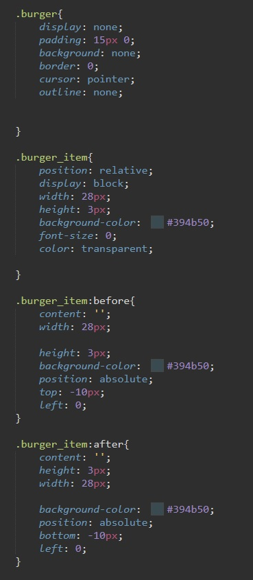
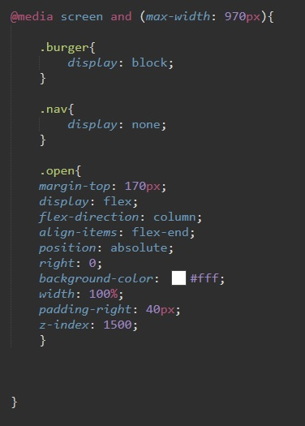

меню стилизуем как требует того верстка, а вот скрытую кнопку burger стилизуем так:
Логика тут такая в кнопку помещаем тег span? делаем его палочкой, затем добавляем ему два псевдоэлемента before и after их стилизуем точно так же. в итоге у нас три полосочки в видеро бергер кнопки.
объявляем три переменные: нашу навигация, саму кнопку бургер и ссылки в навигации.
Первая функция добавляет удалаяет класс OPEN нашей навигации, т.е. она открывает и скрывает
Вторая функция удаляет класс OPEN у навигации при нажатии на ссылку.
Теперь посмотрим про класс OPEN
обязательно в медиа запросе мы меняем свойство display у кнопки и навигации.
Класс OPEN устанавливает свойству display значение flex и с помощью flex-direction: column выравнивает все элементы меню в столбец. А дальше штрихи по стилизации ссылок.